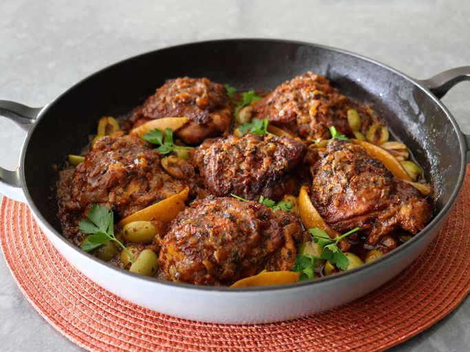

Morrocan Chicken Tagine
Moroccan chicken tagine is a traditional North African stew made with chicken, aromatic spices (such as cumin, ginger, turmeric, cinnamon, and saffron), onions, garlic, preserved lemons, olives, and sometimes dried fruits like apricots or raisins. The dish is slow-cooked in a tagine (a conical clay pot) or a heavy pot, resulting in tender, flavorful chicken with a rich, fragrant sauce. It is often served with couscous or bread.
Ingriedients (1/2)
Marinade
- 1/4 Teaspoon saffron threads
- 1/2 chicken broth or water
- 1 preserved lemon
- 3 garlic cloves, peeled, crushed
- 1 teaspoon kosher salt
- 1/4 teaspoon freshly ground black pepper
- 2 teaspoon paprika
- 1 teaspoon ground cumin
- 1 teaspoon ground ginger
- 1/2 teaspoon aleppo chili flakes
- 1/4 cup chopped fresh parsley
- 1/4 cup fresh cilantro
- 2 tablespoons olive oil
Tagine
- 2 tablespoons olive oil
- 6 chicken thighs
- 1 large yellow onion (diced)
- 1/4 teaspoon kosher
- 1/8 teaspoon ground cinnamon
- 1/8 teaspoon ground turmeric
- 1 cup pitted green olives (halved)
Directions
Step 1
Combine saffron threads with boiling hot chicken broth or water in a small bowl; steep until cooled to room temperature, 20 to 30 minutes.
Step 2
Cut preserved lemon into quarters. Use a small knife to trim the flesh from the peel. Remove and discard any seeds, and finely chop the flesh. Transfer into a small bowl; reserve until needed. Slice each piece of peel in half to make 8 strips total; reserve until needed.
Step 3
To prepare chicken for marinating, make 2 cuts into the skin side of each thigh, down to the bone, about 1 inch apart. Transfer chicken into a resealable plastic bag; place bag in a bowl to catch any leakage.
Step 4
For marinade, add finely chopped preserved lemon flesh into a bowl; add garlic, salt, black pepper, paprika, cumin, ginger, Aleppo chili flakes, parsley, cilantro, and olive oil. Pour in steeped saffron liquid, and whisk thoroughly until emulsified.
Step 5
Pour marinade into the bag of chicken thighs. Massage chicken with your hands on the outside of the bag until evenly coated with marinade. Squeeze out any air and seal the bag tightly. Marinate in the refrigerator for 3 to 12 hours, turning bag over and massaging occasionally.
Step 6
Carefully remove chicken thighs to a plate, and scrape any excess marinade back into the bag while doing so. Reserve excess marinade for sauce.
Step 7
Heat 2 tablespoons olive oil over medium-high heat in a heavy-duty braising pan, or other type of pan with a tight-fitting lid. Once hot, place the chicken in, skin side down. Cook for about 5 minutes, or until the skin is browned, and fat has rendered. The skin may stick and tear, but that will not affect the final dish. Turn off heat; remove chicken to a plate and reserve.
Step 8
Turn heat back up to medium-high, and add onion, salt, cinnamon, and turmeric to the pan. Cook, stirring for a few minutes, or until onions turn translucent and start to soften. Place chicken thighs back in, skin side up, and pour over any juices from the plate. Distribute the reserved excess marinade over the top of chicken.
Step 9
As soon as juices in the bottom of the pan start to bubble, cover tightly, and reduce heat to low. Cook, covered, for 1 hour.
Step 10
Uncover pan, and baste chicken with cooking liquid. Scatter green olives and reserved lemon peel over the top, and baste again.
Step 11
Cover; cook until chicken is very tender and will easily pull away from the bone, 15 to 20 minutes more.
Step 12
Raise heat up to medium-high, and cook, uncovered, to reduce the cooking liquid until slightly thickened, about 5 minutes. The sauce can be left thin and brothy, or cooked further to reduce to a glaze, or anywhere in between.
Step 13
Garnish with fresh parsley, cilantro sprigs, and another dusting of chili flakes.